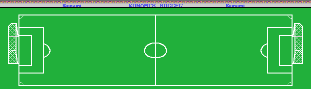
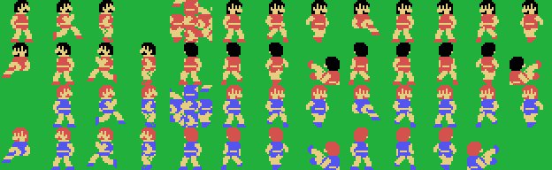
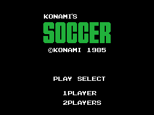

Konami's Soccer salió en 1985 para MSX, en cartucho de 32 KB con el número de catálogo RC-732. Un partido de fútbol de seis contra seis más los porteros, con reloj, prórroga por penaltis y editor de nombres para los dos equipos.

Un MSX1 enseña 32 casillas de ancho. El campo de este juego mide 80, y vive descomprimido en la RAM, en 0xE600: 80 columnas por 23 filas, 1.840 casillas. La pantalla es una ventana de 32 columnas que corre por él, y por dónde va lo dice (0xE2C1), que arranca en la 24.
La medida no está escrita en ninguna parte del cartucho: la fija la aritmética de vuelca_el_campo (0x5DD6), que saca 32 casillas con outi y salta 48 antes de la fila siguiente. 32 más 48 son 80.
En píxeles el campo mide 640 de ancho. Las bandas están en las alturas 0x1D y 0xB3 —150 píxeles entre ellas—, los fondos en el píxel 30 y el 601, los palos ocupan 0x49-0x4A y 0x81-0x82 —dos píxeles de grosor cada uno— y entre ellos quedan 54 píxeles de portería. La red está en el píxel 0x12 y en el 0x267: ahí se clava la pelota del gol, con su sonido propio.

Los doce jugadores de campo no se dibujan igual. Un bando se estampa sobre el mapa, como parches de tres por tres casillas; el otro sale con cinco sprites por jugador. En Hallazgos está el porqué y el orden exacto del cuadro.
Las poses salen de un árbol de dos niveles: (ix+0x0C) elige el grupo y (ix+0x0D) el dibujo dentro del grupo. Son 26 poses para un bando y 25 para el otro, y arriba están todas.
Los dos porteros no son fichas como los demás: son dos parches con su propia tabla y su propio hueco de fondo, que se estampan detrás de los seis.
No hay una inteligencia distinta por nivel: hay bandas muertas y permisos.
| nivel | 1 | 2 | 3 | 4 | 5 |
|---|---|---|---|---|---|
| altura a la que el portero deja de reaccionar | 32 | 44 | 24 | 20 | 16 |
| cuadros que tarda en reaccionar la máquina | 16 | 14 | 12 | 10 | 8 |
| paso de la máquina con la pelota | 0x0E0 | 0x0F0 | 0x100 | 0x110 | 0x120 |
| paso de la máquina suelto | 0x130 | 0x140 | 0x150 | 0x160 | 0x170 |
El bando del humano reacciona siempre en 8 cuadros, así que la máquina no llega a ganarle nunca: en el nivel 5 lo iguala. Y el nivel 3 es el nivel justo: es donde el paso de la máquina vale exactamente lo mismo que el del humano —0x100 con la pelota y 0x150 suelto, los dos valores fijos que 0x5721 le da al bando 0—. Por debajo del 3 la máquina anda más despacio que tú; por encima, más deprisa.
Lo raro de la tabla es el portero del nivel 2, que con 44 es el más pasivo de los cinco, más que el del nivel 1. Del 3 al 5 la progresión baja limpia.
Y hay cuatro cosas que la máquina sólo hace a partir de cierto nivel:
| lo que hace | desde el nivel |
|---|---|
apuntar a donde va a estar el objetivo, y no a donde está (0x9260) | 4 |
la finta en diagonal (0xB12C) | 3 |
despejar tras un tiro (0xB19D) | 4 |
corregir a la esquina contraria a la que va el portero (0xB266) | 4 |
pitar el fuera de juego (0xB671) | 3 |
En el nivel 1, además, la mitad de las pasadas ni siquiera esquiva (0xB0D4).

Se eligen uno o dos jugadores, el color de camiseta de cada equipo —ocho juegos de tres tonos, y el menú no deja que coincidan—, el nivel y la duración de la parte. Los nombres de los equipos se editan letra a letra, y de fábrica son EAGLES y STONES.